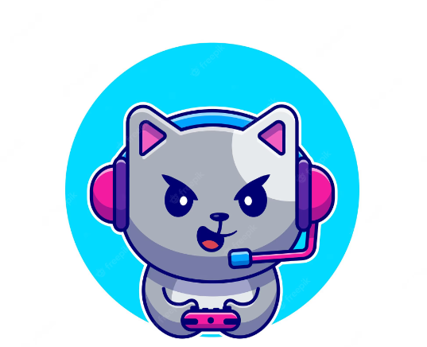
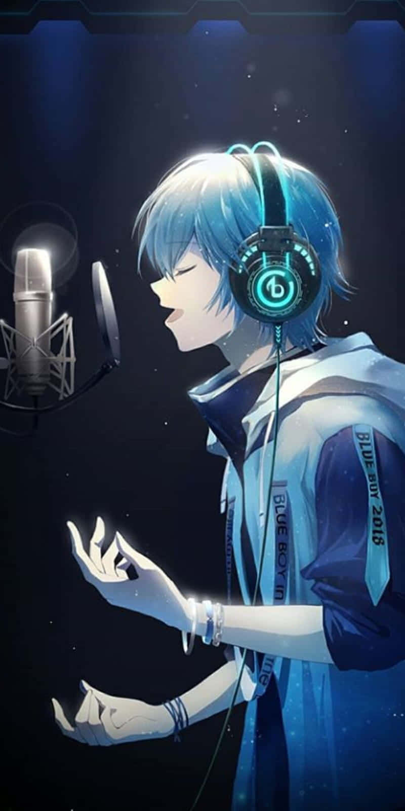

| Home |
|---|
| Explore(CSS) |
| Explore(BS) |
| Notifications |
| Messages |
| Bookmarks |
| Lists |
| Profile |
| Tuit |
| Reply |
Tuiter
Home

- Topic 123  Vinaya @Vinaya - 2h
- Topic 349  Shrav @Shrav - 2h
- Topic 678 Zach @Zach - 2h
I'm Vinaya, a passionate gamer who loves diving into the virtual world of Valorant. As I sit here, mouse in hand and headset securely in place, the rush of adrenaline surges through my veins. Every match brings an exhilarating mix of teamwork, strategy, and precision shooting. Currently, I find myself basking in the glory of the Gold rank, a testament to the countless hours I've dedicated to honing my skills. The satisfaction of clutching rounds, coordinating with my teammates, and outsmarting opponents fills me with a sense of accomplishment. Valorant has become more than just a game for me; it's a platform where I can express my competitive spirit and immerse myself in a world of thrilling battles. And with each victory, I fuel my determination to climb even higher, knowing that the challenges ahead will only make me stronger.
Reply 120 | Retuit 150 | Like 500 | Share
I'm Shrav, a vocalist who finds sheer joy and solace in the world of singing. Music flows through my veins, and whenever I open my mouth to sing, I feel like I'm releasing a piece of my soul into the universe. One artist who has had an immense impact on my musical journey is the legendary A.R. Rahman. His compositions are like magic, capable of stirring emotions deep within me. Rahman's ability to blend different genres and create captivating melodies is something I deeply admire. As a devoted fan, I find myself constantly inspired by his work, pushing myself to explore new vocal techniques and experiment with various musical styles. Rahman's music has taught me to embrace my unique voice and to pour my heart into every note I sing. His songs have become my refuge, a place where I can lose myself and connect with something greater. I aspire to create music that moves people in the same way Rahman's creations have touched me, and I am forever grateful for the influence he has had on my journey as a vocalist.
Reply 120 | Retuit 150 | Like 500 | ShareReply 120 | Retuit 150 | Like 500 | Share